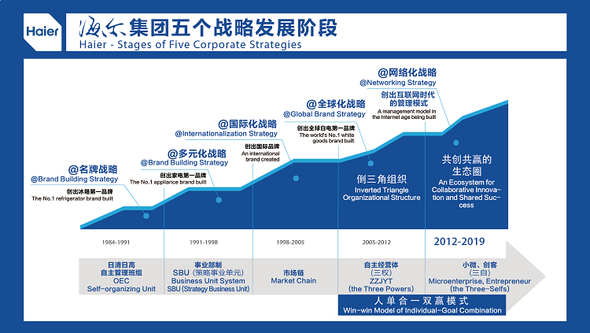

从1984年创业至今，海尔集团经过了名牌战略发展阶段、多元化战略发展阶段、国际化战略发展阶段、全球化品牌战略发展阶段四个阶段，2012年12月，海尔集团进入第五个发展阶段——网络化战略阶段。创业30多年来，海尔致力于成为“时代的企业”，每个阶段的战略主题都是随着时代变化而不断变化的，但贯穿海尔发展历程的，都离不开管理创新，重点关注的就是“人”的价值实现，使员工在为用户创造价值的同时实现自身的价值。海尔从2005年提出“人单合一”已经十年，现在“人单合一双赢”模式因破解了互联网时代的管理难题而吸引了世界著名商学院、管理专家争相跟踪研究。